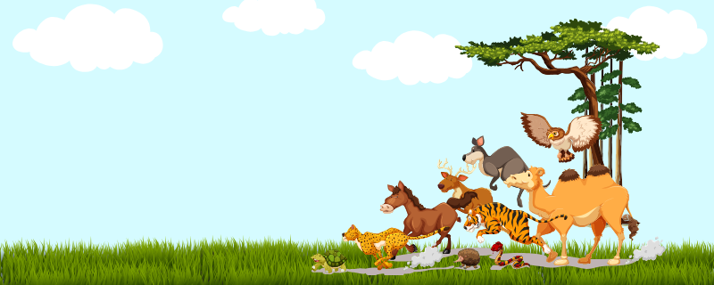

Academics in the Wild (AITW) is an initiative to support physicists and mathematicians in their journey from academia to industry. Are you currently on any stage of that journey? If so, we would love to have you on board!
The initiative started as a podcast called Physicists in the Wild where Aggie Branczyk interviewed physicists who turned their PhD training into diverse and often unconventional careers.
Now, we are building a free community, to be centred around the AITW Discord server, where we will regularly host informative and supportive events related to academia-industry career transitions.
Some events we plan to host are:
- AMAs with ex-academics who made the transition to industry, where you can ask any burning questions you have
- Watch parties where we watch relevant talks, interviews, podcasts, etc together and discuss the content as a group
- 1-1 coffee chats/speed networking
- Informational interview work sessions, where we work through all the steps to set up and prepare for informational interviews with people in relevant industries
- Support sessions, where you can share what you’re worried about and see how others have dealt with similar issues
If you would like stay up-to-date as the initiative grows, click the "Sign up" button below.
See you soon!